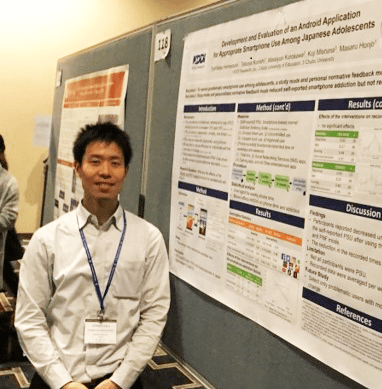

-

NAME
- Toshitaka Hammaura
Current positions
-
JSPS Research Fellow,
National Center for Cognitive Behavior Therapy and Research,
National Center of Neurology and Psychiatry -
Research Fellow (PD),
Japan Society for the Promotion of Science -
Invited Researcher,
KDDI Research, Inc.
-
Lisences
-
Clinical Psychologist,
Foundation of the Japanese Certification Board for Clinical Psychologists. (Japan) -
Certified Public Psychologist,
Ministry of Health, Labour, and Welfare / Ministry of Education, Culture, Sports, Science and Technology. (Japan)
-
Clinical Psychologist,
-
Education
- 2006.09-2010.05. Bachelor of Art in Psychology, Trinity Western University, Langley, BC, Canada. Minor in Business Administration.
- 2012.04.-2015.08. Master of Science in Clinical Psychology, California State University, Fullerton, CA, USA.
- 2016.04.-2019/03. Doctor of Philosophy in Education (Clinical Psychology), University of Tokyo, Bunkyo, Tokyo, Japan.